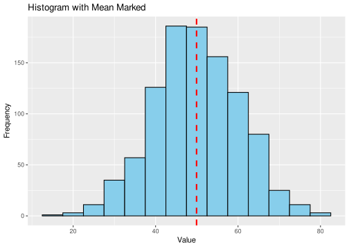
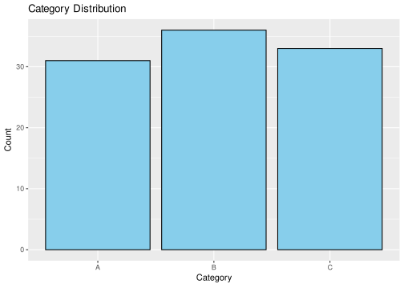
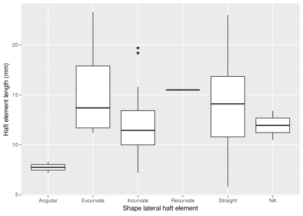
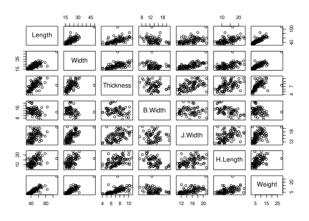

data("USArrests")
df <- USArrests5 Data Science Workflow
5.1 Introduction to Data Science Workflow
In a typical data science workflow, we move through five primary stages: data collection, data cleaning, exploration, modeling, and communication. These steps collectively transform raw data into actionable insights driven by research questions.
Data Collection: This is the first step, where data is gathered from various sources, such as databases, APIs, or web scraping. In R, packages like
readrandhttrfacilitate efficient data import from structured files (e.g., CSV, Excel) and web sources.Data Cleaning: Data cleaning involves preparing raw data for analysis, handling missing values, correcting data types, and dealing with outliers. Tools like
dplyrandtidyrare often used in R to perform these operations, enabling tasks like removing duplicates, imputing missing data, and restructuring data into a “tidy” format suitable for analysis.Data Exploration: Exploratory Data Analysis (EDA) is the phase where we examine the data’s characteristics, uncover patterns, and form hypotheses. Visualizations (using
pairs()or a wide range of plot types available in Base R andggplot2) and summary statistics (summary(),skimr) help in understanding the data distribution, relationships between variables, and identifying any anomalies.Modeling: At this stage, statistical or machine learning models are developed to predict or explain outcomes. In R, packages like
caretandtidymodelsstreamline the modelling process, from splitting data and selecting models to tuning hyperparameters and evaluating performance.Communication: The final stage focuses on presenting findings clearly, often through reports, dashboards, or interactive applications. Using R Markdown for reports or Shiny for interactive applications enables data scientists to effectively communicate insights to stakeholders.
5.1.1 Example: Simple Data Science Project in R
Let’s consider a simple example of a data science project where we predict house prices based on available features:
- Data Collection: Load a dataset such as
house_prices.csvusingread_csv(). - Data Cleaning: Use
dplyrto handle missing values (e.g.,mutate_if(is.na, median)to replace with median values) and convert categorical variables to factors. - Data Exploration: Visualize relationships between features like square footage and price using
ggplot(data = houses) + geom_point(aes(x = sqft, y = price)). - Modeling: Create a linear model with
lm(price ~ sqft + num_bedrooms, data = houses). - Communication: Report results in an R Markdown document, showing model coefficients, predictions, and visualizations to explain findings.
This structured workflow, using R tools tailored to each step, enables efficient and reproducible data science practices.
Here’s a version tailored to archaeology students, using the built-in R dataset USArrests to represent hypothetical archaeological data. This dataset can help illustrate each stage in a data science workflow, from cleaning and exploration to modelling and communication.
Let’s consider a simple example of a data science project. Suppose we aim to determine main factors in criminality using the canonical dataset USArrests.
Data Collection: Load the dataset directly from R’s built-in datasets.
Data Cleaning: Check for any missing values or potential outliers that might represent data entry errors.
# Check for missing values any(is.na(df))[1] FALSE# Inspect the dataset structure and summary str(df)'data.frame': 50 obs. of 4 variables: $ Murder : num 13.2 10 8.1 8.8 9 7.9 3.3 5.9 15.4 17.4 ... $ Assault : int 236 263 294 190 276 204 110 238 335 211 ... $ UrbanPop: int 58 48 80 50 91 78 77 72 80 60 ... $ Rape : num 21.2 44.5 31 19.5 40.6 38.7 11.1 15.8 31.9 25.8 ...summary(df)Murder Assault UrbanPop Rape Min. : 0.800 Min. : 45.0 Min. :32.00 Min. : 7.30 1st Qu.: 4.075 1st Qu.:109.0 1st Qu.:54.50 1st Qu.:15.07 Median : 7.250 Median :159.0 Median :66.00 Median :20.10 Mean : 7.788 Mean :170.8 Mean :65.54 Mean :21.23 3rd Qu.:11.250 3rd Qu.:249.0 3rd Qu.:77.75 3rd Qu.:26.18 Max. :17.400 Max. :337.0 Max. :91.00 Max. :46.00Although
USArrestsdoesn’t contain missing values, this step reminds us to handle such cases in real-world data.Data Exploration: Visualize and summarize data to understand patterns. For instance, we might be interested in the value distribution of murder arrests.
# Quick summary of the data distribution summary(df)Murder Assault UrbanPop Rape Min. : 0.800 Min. : 45.0 Min. :32.00 Min. : 7.30 1st Qu.: 4.075 1st Qu.:109.0 1st Qu.:54.50 1st Qu.:15.07 Median : 7.250 Median :159.0 Median :66.00 Median :20.10 Mean : 7.788 Mean :170.8 Mean :65.54 Mean :21.23 3rd Qu.:11.250 3rd Qu.:249.0 3rd Qu.:77.75 3rd Qu.:26.18 Max. :17.400 Max. :337.0 Max. :91.00 Max. :46.00# Visualize the distribution of artifact "types" (represented by variables like 'Murder' here) boxplot(df$Murder, main="Distribution of 'Artifact Type A' Count by Region")This boxplot would give a quick view of the central tendencies and spread of murder arrests across the dataset.
Modeling: Create a simple model to analyze relationships between variables. For instance, let’s assume we’re exploring how
UrbanPop(population percentage in urban areas) might relate toMurder.model <- lm(Murder ~ UrbanPop, data = df) summary(model)Call: lm(formula = Murder ~ UrbanPop, data = df) Residuals: Min 1Q Median 3Q Max -6.537 -3.736 -0.779 3.332 9.728 Coefficients: Estimate Std. Error t value Pr(>|t|) (Intercept) 6.41594 2.90669 2.207 0.0321 * UrbanPop 0.02093 0.04333 0.483 0.6312 --- Signif. codes: 0 '***' 0.001 '**' 0.01 '*' 0.05 '.' 0.1 ' ' 1 Residual standard error: 4.39 on 48 degrees of freedom Multiple R-squared: 0.00484, Adjusted R-squared: -0.01589 F-statistic: 0.2335 on 1 and 48 DF, p-value: 0.6312This provides an understanding of how urban population percentage might be related to murder arrests in our dataset.
Communication: Present findings in an R Markdown document, incorporating both visualizations and model summaries. You can interpret results to suggest whether certain types of artifacts are more commonly found in highly populated regions.
5.2 Data Science Workflow in R: Data Import and Preparation
5.2.1 Importing Data
A critical step in any data science workflow is importing data from external sources. R provides robust tools for importing data from a variety of formats:
- CSV files: Use the
read.csv()function from base R.
- Excel files: Leverage the
readxlpackage withread_excel().
- Databases: Employ the
DBIpackage to connect to relational databases and fetch data using SQL queries.
Examples using base R, readxl and DBI+RSQLite
# Load necessary libraries
library(readxl)
library(DBI)
library(RSQLite)
# Read a CSV file
csv_data <- read.csv("data.csv")
# Read an Excel file
excel_data <- readxl::read_excel("data.xlsx")
# Connect to a SQLite database and fetch data
con <- DBI::dbConnect(RSQLite::SQLite(), "data.db")
db_data <- DBI::dbGetQuery(con, "SELECT * FROM table_name")
DBI::dbDisconnect(con)5.2.2 Data Cleaning
Before analysis, raw data often requires cleaning to address issues like missing values, duplicates, and inconsistencies.
Example using Base R
- Removing Missing Values
Usena.omit()to remove rows with missing values oris.na()to identify them.
# Example data
data <- data.frame(A = c(1, 2, NA, 4), B = c("x", NA, "y", "z"))
print("Before:")[1] "Before:"print(data) A B
1 1 x
2 2 <NA>
3 NA y
4 4 z# Remove rows with NA
clean_data <- na.omit(data)
print("After:")[1] "After:"print(clean_data) A B
1 1 x
4 4 z- Handling Duplicates
Useduplicated()to identify duplicate rows orunique()to retain only unique rows.
data <- data.frame(A = c(1, 2, 2, 4), B = c("x", "y", "y", "z"))
print("Before:")[1] "Before:"print(data) A B
1 1 x
2 2 y
3 2 y
4 4 z# Remove duplicate rows
data_unique <- data[!duplicated(data), ]
print("After:")[1] "After:"print(data_unique) A B
1 1 x
2 2 y
4 4 z- Replacing Values
Replace specific values withifelse()or direct indexing.
data <- data.frame(A = c(1, 2, 999, 4), B = c("x", "y", "z", "999"))
print("Before:")[1] "Before:"print(data) A B
1 1 x
2 2 y
3 999 z
4 4 999# Replace 999 with NA
data[data == 999] <- NA
print("After:")[1] "After:"print(data) A B
1 1 x
2 2 y
3 NA z
4 4 <NA>Example using tidyverse
Key functions include:
- tidyr: Tools like fill() (fill missing values) and drop_na() (remove rows with NAs).
- dplyr: Functions like distinct() to remove duplicates and mutate() to fix inconsistencies.
library(dplyr)
Attaching package: 'dplyr'The following objects are masked from 'package:stats':
filter, lagThe following objects are masked from 'package:base':
intersect, setdiff, setequal, unionlibrary(tidyr)
# Example dataset
data <- data.frame(id = c(1, 2, 2, 3, NA), value = c(NA, "A", "A", "B", "C"))
print("Before:")[1] "Before:"print(data) id value
1 1 <NA>
2 2 A
3 2 A
4 3 B
5 NA C# Clean the data
cleaned_data <- data %>%
drop_na(id) %>% # Remove rows with missing IDs
distinct() %>% # Remove duplicates
fill(value, .direction = "down") # Fill missing values downward
print("After:")[1] "After:"print(cleaned_data) id value
1 1 <NA>
2 2 A
3 3 B5.2.3 Data Transformation
Transforming data is essential for reshaping and preparing it for analysis.
Example using Base R
Base R provides versatile and efficient tools for cleaning and transforming data.
A few example operations common in data science workflows are:
- Filtering Rows
Subset data using logical conditions.
data <- data.frame(A = 1:5, B = letters[1:5])
print("Before:")[1] "Before:"print(data) A B
1 1 a
2 2 b
3 3 c
4 4 d
5 5 e# Filter rows where A > 3
filtered_data <- data[data$A > 3, ]
print("After:")[1] "After:"print(filtered_data) A B
4 4 d
5 5 e- Selecting Columns
Use indexing to select specific columns.
# Select column A
selected_columns <- data[, "A", drop = FALSE]
print(selected_columns) A
1 1
2 2
3 3
4 4
5 5- Adding or Modifying Columns
Use the$operator or indexing to create or modify columns.
data$new_col <- data$A * 2
print(data) A B new_col
1 1 a 2
2 2 b 4
3 3 c 6
4 4 d 8
5 5 e 10- Reshaping Data
Usereshape()to pivot data between wide and long formats.
# Example wide format
data <- data.frame(id = 1:2, Q1 = c(10, 20), Q2 = c(30, 40))
# Convert to long format
long_data <- reshape(data, direction = "long", varying = list(c("Q1", "Q2")), v.names = "value", timevar = "quarter")
print(long_data) id quarter value
1.1 1 1 10
2.1 2 1 20
1.2 1 2 30
2.2 2 2 40Example using tidyverse
Use dplyr for: - Filtering and selecting rows/columns: filter(), select(). - Creating new variables: mutate(). - Reshaping: pivot_longer() and pivot_wider().
library(dplyr)
library(tidyr)
# Example dataset
data <- data.frame(
id = 1:3,
Q1 = c(10, 20, 30),
Q2 = c(15, 25, 35)
)
print("Before:")[1] "Before:"print(data) id Q1 Q2
1 1 10 15
2 2 20 25
3 3 30 35# Transform the data
transformed_data <- data %>%
pivot_longer(cols = starts_with("Q"), names_to = "quarter", values_to = "value") %>%
filter(value > 15) %>% # Filter rows where value > 15
mutate(value_scaled = value / max(value)) # Add a new scaled column
print("After:")[1] "After:"print(transformed_data)# A tibble: 4 × 4
id quarter value value_scaled
<int> <chr> <dbl> <dbl>
1 2 Q1 20 0.571
2 2 Q2 25 0.714
3 3 Q1 30 0.857
4 3 Q2 35 1 By mastering these data preparation steps, you ensure a clean and well-structured dataset, setting the stage for effective analysis and visualization.
5.3 Exploratory Data Analysis
5.3.1 Univariate Statistics
Numeric variables
This section equips you to explore univariate distributions of numeric variables, uncovering insights from centrality to variability with both statistical and visual techniques.
- Histograms: Exploring a single variable involves visualizing its distribution to identify patterns such as central tendency, spread, and outliers. Histograms are one of the most effective tools for this.
Example: Using ggplot2 for histograms
library(ggplot2)
# Example dataset - variable with normal distribution
data <- data.frame(value = rnorm(1000, mean = 50, sd = 10))
# Create a histogram
ggplot(data, aes(x = value)) +
geom_histogram(binwidth = 5, fill = "skyblue", color = "black") +
labs(title = "Distribution of Values", x = "Value", y = "Frequency")- Range: The range of a variable provides a simple measure of the spread of the data. It is calculated as the difference between the maximum and minimum values. Base R already has a function named
range()to handle this calculation:
cat("Min:", min(data$value), "Max:", max(data$value))Min: 10.6038 Max: 90.53116range_val <- range(data$value)
cat("Range (Max - Min):", range_val)Range (Max - Min): 10.6038 90.53116- Central tendency measures: the mean, median, and mode describe the centre of the distribution.
- Dispersion measures: variance and standard deviation describe the spread of the data.
mean_val <- mean(data$value)
median_val <- median(data$value)
variance <- var(data$value)
std_dev <- sd(data$value)
# Print results
cat("Mean:", mean_val, "Median:", median_val, "Variance:", variance, "SD:", std_dev)Mean: 50.29678 Median: 50.69206 Variance: 104.3537 SD: 10.21537Example: Plotting a Histogram and Marking the Mean
Overlay the mean on a histogram to visualize its position relative to the distribution.
ggplot(data, aes(x = value)) +
geom_histogram(binwidth = 5, fill = "skyblue", color = "black") +
geom_vline(aes(xintercept = mean_val), color = "red", linetype = "dashed", size = 1) +
labs(title = "Histogram with Mean Marked", x = "Value", y = "Frequency")Warning: Using `size` aesthetic for lines was deprecated in ggplot2 3.4.0.
ℹ Please use `linewidth` instead.
Non-numeric variables
These approaches allow for comprehensive exploration of univariate statistics for categorical variables, emphasizing both numeric summaries and visual insights.
Univariate statistics for non-numeric (categorical) variables focus on summarizing and visualizing the distribution of categories. Here’s a breakdown with examples:
- Frequency Tables: A frequency table lists the counts of each category, helping to understand the distribution.
# Example Dataset
data <- data.frame(category = sample(c("A", "B", "C"), size = 100, replace = TRUE))
# Frequency Table
table(data$category)
A B C
33 30 37 - Bar Plots: Bar plots visually represent the frequency distribution of categories.
library(ggplot2)
# Bar Plot
ggplot(data, aes(x = category)) +
geom_bar(fill = "skyblue", color = "black") +
labs(title = "Category Distribution", x = "Category", y = "Count")
- Proportion Visualization: Proportions provide relative frequencies, useful for comparing categorical data.
# Proportion Table
prop_table <- prop.table(table(data$category))
# Pie Chart
ggplot(data, aes(x = "", fill = category)) +
geom_bar(width = 1) +
coord_polar("y") +
labs(title = "Category Proportions")
- Mode: The mode is the most frequently occurring category.
# Mode Calculation
mode_category <- names(which.max(table(data$category)))
cat("Mode:", mode_category)Mode: C5.3.2 Bivariate statistics
Loading DartPoints dataset from archdata:
library(archdata)
data(DartPoints)- Scatter Plots: Visualize relationships between two numerical variables.
ggplot(DartPoints, aes(x = H.Length, y = Weight)) +
geom_point() +
labs(x = "Haft element length (mm)", y = "Weight (gm)")
- Box Plots: Compare a numerical variable across categories of a categorical variable.
ggplot(DartPoints, aes(x = Haft.Sh, y = H.Length)) +
geom_boxplot() +
scale_x_discrete(labels = c("Angular", "Excurvate", "Incurvate", "Recurvate", "Straight")) +
labs(x = "Shape lateral haft element", y = "Haft element length (mm)")- Bar Plots with two variables (stacked): Compare counts or proportions of categorical variables.
ggplot(DartPoints, aes(x = Haft.Sh, fill = Should.Sh)) +
geom_bar() +
scale_x_discrete(labels = c("Angular", "Excurvate", "Incurvate", "Recurvate", "Straight")) +
scale_fill_discrete(labels = c("Excurvate", "Incurvate", "Straight", "None")) +
labs(x = "Shape lateral haft element", y = "Count", fill = "Shoulder shape")
- Contingency Tables: Quick assessment of the distribution of counts among two categorical variables.
table(DartPoints$Haft.Sh, DartPoints$Should.Sh)
E I S X
A 0 2 0 0
E 0 3 6 0
I 0 16 4 2
R 0 0 1 0
S 3 16 35 1- Mosaic Plots:
mosaicplot(table(DartPoints$Haft.Sh, DartPoints$Should.Sh),
xlab = "Shape lateral haft element",
ylab = "Shoulder shape",
shade = TRUE)- Correlation: Measure linear relationships between numerical variables.
cor(DartPoints$H.Length, DartPoints$Weight)[1] 0.486397- Simple linear Regression: Calculate the parameters (intercept, slope) for a linear model with the minimum distance towards data points in two numerical variables. Geometrically, such model is equivalent to a line in a two-dimensional plane.
With Base R:
model <- lm(Weight ~ H.Length, data = DartPoints,)
model
Call:
lm(formula = Weight ~ H.Length, data = DartPoints)
Coefficients:
(Intercept) H.Length
0.8013 0.5102 plot(DartPoints$H.Length, DartPoints$Weight,
xlab = "Haft element length (mm)",
ylab = "Weight (gm)")
abline(model, col = "red", lwd = 5)
# or
abline(a = model$coefficients["(Intercept)"],
b = model$coefficients["H.Length"],
col = "blue", lty = 3, lwd = 5)
With ggplot2, a linear model can be added directly to a plot with geom_smooth(method = "lm"):
ggplot(DartPoints, aes(x = H.Length, y = Weight)) +
geom_point() +
geom_smooth(method = "lm", color = "red")`geom_smooth()` using formula = 'y ~ x'
The function geom_smooth() will add by default a shaded area around the line, representing the confidence interval (see argument se and level in ?geom_smooth()).
- Visualizing multiple correlation pairs
Quick visualisation of a correlation matrix using cor()
cor(DartPoints[, c("Length", "Width", "Thickness")]) Length Width Thickness
Length 1.0000000 0.7689932 0.5890989
Width 0.7689932 1.0000000 0.5459291
Thickness 0.5890989 0.5459291 1.0000000Build a larger correlation matrix (only numerical variables and excluding cases with missing values) and plot it using corrplot() from the corrplot package:
library(corrplot)corrplot 0.95 loadedselected_variables <- c("Length", "Width", "Thickness", "B.Width", "J.Width", "H.Length", "Weight")
corr_matrix <- cor(DartPoints[, selected_variables],
use = "complete.obs")
corrplot(corr_matrix, method = "circle")- Hypothesis Testing:
t-Test: Compare means of numerical variables across two categories. Conventionally, P-value < 0.05 means that the null hypothesis (there are no differences between the means of these variables) is very unlikely.
# consider only cases in blade shape categories "E" (excurvate) and "S" (straight)
DartPoints_IandS <- subset(DartPoints, Blade.Sh == "E" | Blade.Sh == "S")
# apply test for Weight between the blade shape two categories
t.test(Weight ~ Blade.Sh, data = DartPoints_IandS)
Welch Two Sample t-test
data: Weight by Blade.Sh
t = 1.6009, df = 72.799, p-value = 0.1137
alternative hypothesis: true difference in means between group E and group S is not equal to 0
95 percent confidence interval:
-0.3652556 3.3471603
sample estimates:
mean in group E mean in group S
8.530952 7.040000 In this case, the evidence is insufficient for demonstrating that there is a consistent difference in weight between dart points with excurvate and straight blades.
Chi-Square Test: Test independence between categorical variables. Conventionally, P-value < 0.05 means that the null hypothesis (the variables are independent) is very unlikely.
chisq.test(table(DartPoints$Haft.Sh, DartPoints$Haft.Or))Warning in chisq.test(table(DartPoints$Haft.Sh, DartPoints$Haft.Or)):
Chi-squared approximation may be incorrect
Pearson's Chi-squared test
data: table(DartPoints$Haft.Sh, DartPoints$Haft.Or)
X-squared = 101.85, df = 16, p-value = 1.556e-14In this case, the evidence supports, with 95% confidence, that haft shape and orientation are not independent.
- Quasi-multivariate approaches:
Visualise multiple subsets of a bivariate relationship by splitting plots by a categorical variable.
“Faceting” scatter plots with ggplot2:
ggplot(DartPoints, aes(x = Thickness, y = Weight)) +
geom_point() +
facet_wrap(~ Blade.Sh)
Visualise multiple pairwise bivariate relationships with pairs() (only numeric variables):
selected_variables <- c("Length", "Width", "Thickness", "B.Width", "J.Width", "H.Length", "Weight")
pairs(DartPoints[, selected_variables])Example of further customisation:
reg <- function(x, y, ...) {
points(x,y, ...)
abline(lm(y~x))
}
panel.cor <- function(x, y, digits = 2, prefix = "", cex.cor, ...) {
usr <- par("usr"); on.exit(par(usr))
par(usr = c(0, 1, 0, 1))
r <- abs(cor(x, y, use = "complete.obs"))
txt <- format(c(r, 0.123456789), digits = digits)[1]
txt <- paste0(prefix, txt)
text(0.5, 0.5, txt, cex = 1.1, font = 4)
}
pairs(DartPoints[, selected_variables],
upper.panel = reg,
lower.panel = panel.cor,
cex = 1.5, pch = 19, col = adjustcolor(4, .4))
- Logistic Regression: a statistical method used for binary classification problems. It estimates the probability of an observation being in one or another category (binary variable or categorical variable with two possible values) based on one or more independent (explanatory) variables. As the linear regression, the analysis involves calculating the parameters of a equation corresponding to a geometric object, in this case a sigmoid or logistic curve.
# consider only cases in blade shape categories "E" (excurvate) and "S" (straight)
DartPoints_IandS <- subset(DartPoints, Blade.Sh == "E" | Blade.Sh == "S")
model <- glm(Blade.Sh ~ Length + Width + J.Width, data = DartPoints_IandS, family = "binomial")
summary(model)
Call:
glm(formula = Blade.Sh ~ Length + Width + J.Width, family = "binomial",
data = DartPoints_IandS)
Coefficients:
Estimate Std. Error z value Pr(>|z|)
(Intercept) 2.71823 1.49160 1.822 0.0684 .
Length -0.08122 0.03421 -2.374 0.0176 *
Width 0.23553 0.09825 2.397 0.0165 *
J.Width -0.25868 0.13064 -1.980 0.0477 *
---
Signif. codes: 0 '***' 0.001 '**' 0.01 '*' 0.05 '.' 0.1 ' ' 1
(Dispersion parameter for binomial family taken to be 1)
Null deviance: 113.63 on 81 degrees of freedom
Residual deviance: 104.02 on 78 degrees of freedom
AIC: 112.02
Number of Fisher Scoring iterations: 4A logistic regression model with significant coefficients (p-values < 0.05) can be considered good classifiers, and could help us predict or infer the binary classification from additional combinations of explanatory variables. However, a truly good predictor will normally require a higher number of cases when building up the model.
To visualize a logistic regression model in R, you can use ggplot2 to create a curve showing the predicted probabilities alongside the observed binary outcomes in relation to one explanatory variable (e.g., Length).
# Prepare data for visualization
# Generate a sequence of Length values and keep Width and J.Width fixed at their mean
new_data <- data.frame(
Length = seq(min(DartPoints_IandS$Length), max(DartPoints_IandS$Length), length.out = 100),
Width = mean(DartPoints_IandS$Width, na.rm = TRUE),
J.Width = mean(DartPoints_IandS$J.Width, na.rm = TRUE)
)
# Add predicted probabilities
new_data$predicted_prob <- predict(model, newdata = new_data, type = "response")
# Plot the predicted probabilities
ggplot(new_data, aes(x = Length, y = predicted_prob)) +
geom_line(color = "blue") +
labs(
title = "Predicted Probability of Blade Shape 'E' by Length",
x = "Length",
y = "Predicted Probability"
) +
theme_minimal()5.4 (EXTRA)Basic Machine Learning Concepts
- Introduction to Machine Learning
- Overview of supervised and unsupervised learning.
- Example: Differentiating between regression and classification tasks.
- Overview of supervised and unsupervised learning.
- K-Nearest Neighbors (KNN)
- Understanding KNN for classification.
- Example: Implementing KNN using
classpackage.
- Understanding KNN for classification.
- Clustering
- Introduction to clustering techniques (e.g., k-means clustering).
- Example: Performing k-means clustering with
kmeansand visualizing clusters.
- Introduction to clustering techniques (e.g., k-means clustering).
5.5 (EXTRA)Model Evaluation
- Train/Test Split
- Splitting data into training and testing sets.
- Example: Using
caretpackage to split data and train models.
- Splitting data into training and testing sets.
- Model Performance Metrics
- Evaluating model performance: accuracy, confusion matrix, ROC curve.
- Example: Calculating and interpreting metrics using
caretandpROC.
- Evaluating model performance: accuracy, confusion matrix, ROC curve.